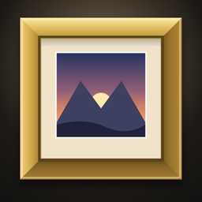

Privacy policy
Last updated: 25 November 2026
MaReelMaker is a desktop application for macOS that runs entirely on your own computer. This policy explains what information the app uses, where it is kept, and how you stay in control of it.
Information the app uses
- Your files. Music tracks and photos you add, and the videos the app renders, stay on your Mac in folders you can see in Finder.
- Google / YouTube account access (optional). If you choose to connect YouTube, you sign in with Google in your own web browser and grant MaReelMaker permission to upload videos to your YouTube channel and to view your YouTube account (used only to show which channel is connected, so videos aren't uploaded to the wrong one).
- Photo-service keys. API keys you enter for stock-photo services are stored on your Mac.
How Google user data is used
- Upload access is used only when you press Upload for a video you selected, with the title, description and privacy setting you chose.
- Account information is used only to display your channel's name and handle inside the app.
- The app does not read, collect, analyse or store your other YouTube or Google data.
- No Google user data is sold, shared with third parties, used for advertising, or used to train AI models.
MaReelMaker's use and transfer to any other app of information received from Google APIs will adhere to the Google API Services User Data Policy, including the Limited Use requirements.
Where data is stored
Sign-in credentials (OAuth tokens) and API keys are stored only on your Mac, encrypted with the macOS Keychain. Data goes directly between your Mac and the services you use (Google/YouTube and the photo services); MaReelMaker has no servers of its own and the developer never receives your data.
YouTube
MaReelMaker uses YouTube API Services. By uploading videos with it you agree to be bound by the YouTube Terms of Service. Google's handling of your data is described in the Google Privacy Policy.
Removing access and deleting data
- In the app, choose Disconnect under Publish → YouTube. This revokes the app's access and deletes the stored sign-in from your Mac.
- You can also revoke access at any time from your Google Account's third-party connections page.
- Deleting a project folder removes its music, photos and videos; uninstalling the app and its data folder removes everything else.
Children
MaReelMaker is not directed at children under 13 and does not knowingly collect information from them.
Changes
If this policy changes, the updated version will be posted on this page with a new date.
Contact
Questions about this policy: open an issue on GitHub